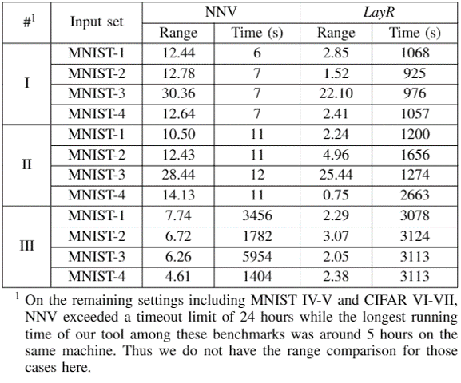

Design and Verification of Learning-Enabled Systems
Project overview
 |
Learning-enabled systems have been receiving numerous attractions from both academia and industry due to promising applications. They often leverage machine learning techniques in their perception of the environment, and increasingly also in the consequent decision making process for planning, navigation, control, etc. With no doubt, safety is one of the key issues before such systems are applied in practice. In this project, we conduct research on safety verification and design of learning-enabled systems with respect to perception, adaptation and control. As shown in the figure, we consider output range analysis for neural networks in perception, reachability analysis for neural network controllers, and safety (reinforcement) learning for adaptation respectively. |
Output Range Analysis of Neural Networks
|  | Neural networks have shown promising applications in perception, where adversarial robustness is the key property. Such correctness problem can be converted to the analysis of their output range. Thus, addressing the output range analysis problem is vital to provide guarantees for the safety and security of neural networks. Informally, output range analysis solves the following problem: given a neural network f and the input range X, compute the output range of f(X). Since a neural network is highly nonlinear due to the large number of parameters and nonlinear activation functions, it is generally difficult to compute the exact range. In most cases, we consider its overapproximation (superset). Such overapproximation can provide an explicit bound for determining whether the neural network output falls into an unwanted region. We propose a layer-wise refinement method that bridges propagation-based methods with mixed-integer linear programming (MILP) by using sliding windows. It outperforms the state-of-the-art tools, e.g. ERAN and NNV (See the following table comparing with NNV). The details can be found in the paper Divide and Slide: Layer-Wise Refinement for Output Range Analysis of Deep Neural Networks which will be published on TCAD soon.
|
Tools
Our tool LayR will be soon available.
Reachability Analysis of Neural-Network Controlled Systems
 |
Data-driven control systems, especially neural-network-based controllers, have recently become the subject of intense research and demonstrated great promises. A Neural-Network Controlled System (NNCS) is essentially a continuous system controlled by a neural network, which produces control inputs at the beginning of each control step based on the current values of the state variables and feeds them back to the continuous system. The main difficulty impeding the direct application of traditional techniques on reachability analysis on classical nonlinear systems to NNCS is the hardness of formally characterizing or abstracting the input-output mapping of a neural network. We propose to use Bernstein polynomials to approximate any Lipschitz-continuous neural-network controller, with provable approximation error bounds. Then the resulting polynomial systems can be verified by current tools, e.g. Flow*. Benefiting from that Bernstein polynomials are universal approximators, our approach has the capability to handle the networks with different types of activation functions. We further turbo our approach by accelerating error bound analysis with GPU-based parallel computing. Additionally, when the given neural-network controller is hard to verify, we also propose a controller re-synthesis technique called verification-aware knowledge distillation (KD) to obtain a verification-friendly neural-network controller by reducing the Lipschitz constant of the original controller. The details can be found in the following papers.
|
Tools: ReachNN*
We have integrated all the aforementioned functions as a tool ReachNN*, which is available HERE. Please be free to play with it.
Learning-based Adaptation for Energy Cost with Safety Guarantee
For many CPSs, multiple controllers designed based on different methodologies may each have their advantages at different system states. Thus, we propose an approach to leverage multiple controllers (including but not limited to neural network controllers) and design an intelligent adaptor for switching among them to enhance both system safety and efficiency. We make the first attempt to handle the case of one traditional model-based controller and one zero-input controller by reinforcement. It leverages a strengthened safe set and robust invariant as a shield, such that the reinforcement learning is safe during training (the left figure).
|
Then we extend this approach for multiple neural-network controllers (the left figure). In particular, we first compute a joint safe configuration space of the multiple controllers, including neural network ones, with a novel method based on Bernstein polynomial approximation, state partitioning, conversion to hybrid systems, and robust invariant set computation. We then develop a DRL-based method to intelligently switch between controllers for reducing energy consumption while maintaining system safety by keeping its state within the safe space.
|